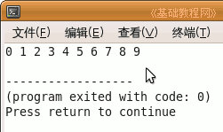
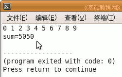

C++ 编程基础教程
作者：TeliuTe 来源：基础教程网
有时候需要处理的是反复进行的工作，这时候使用循环语句是很好的方法，下面我们来看一个练习；
1、启动 Geany
1）点菜单“应用程序－编程－Geany”启动 Geany ，新建一个 c++ 源程序；
2）点菜单“文件－另存为”命令，以“for”为文件名，保存文件到自己的文件夹；
2、输入程序代码
1）先来看一个显示 10 以内的整数代码；
|
for (int i=0; i<10; i++) { cout << i << " "; } |
2）for 语句括号里有三句，第一句是定义一个循环变量，赋初值为 0，
中间一句是循环条件，i 小于 10 的时候，就执行循环语句，这儿是下面的内容，需要用大括号括起来，
后面一句是步长，i++ 是 i=i+1，加一增量操作；
3）保存、编译、生成、运行，显示出 0－9 十个数；

4）因为 i 是从 0 开始的，并且必须小于10，等于也不行，所以是两头是 0 和 9；
5）好的，继续输入一个累加程序，从 1 加到 100（1 + 2 + 3 + ... + 100）；
|
int sum = 0; for (int i=1; i<=100; i++) { sum = sum + i; } cout << "sum=" << sum; |
6）这次 i<=100，可以加到100，sum 是存放和的变量，每次往里面加一个 i，
sum = sum + i ，这一句是累加，像叠木箱一样；
7）保存、编译、生成、运行，最终显示出累加的结果；

|
#include <iostream> using namespace std; int main(int argc, char** argv) { for (int i=0; i<10; i++) { cout << i << " "; } cout << endl; int sum = 0; for (int i=1; i<=100; i++) { sum = sum + i; } cout << "sum=" << sum; return 0; } |
本节学习了 for 循环语句的基本操作，如果你成功地完成了练习，请继续学习下一课内容；
本教程由86团学校TeliuTe制作|著作权所有
基础教程网：http://teliute.org/
美丽的校园……
转载和引用本站内容，请保留版权信息和本站链接。